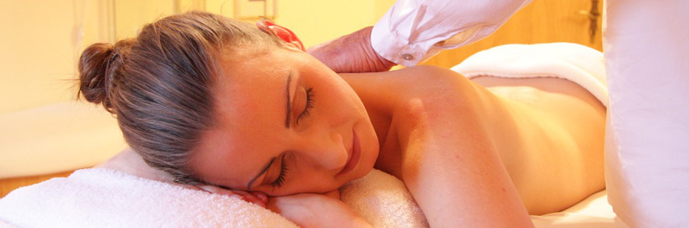

BC therapists have the most comprehensive training in North America and are required to continually update their knowledge and expertise from industry experts.
Therapeutic Massage
This massage is designed to suit your individual needs. Registered massage therapists (RMT) are trained to assess, treat, and make home care suggestions. They also safely complement medical treatments for conditions such as, but not limited to: headaches (including migraines), diabetes, arthritis, joint replacement, multiple sclerosis, tendonitis, asthma, bursitis, sciatica, carpal tunnel syndrome and sports injuries.
Benefits of Therapeutic Massage
- Reduces stress, tension, and anxiety
- Increases blood and lymph circulation
- Enhances immune function
- Decreases muscle and soft tissue pain
- Improves flexibility and range of motion
- Decreases soft tissue healing time
- Improves overall health and well being
Pregnancy Massage
Massage therapy provides treatment that will address symptoms or conditions associated with pregnancy to encourage a healthy and comfortable pre and postpartum transition. It is recommended to continue with massage therapy after labour, as it reduces the recovery time, promotes relaxation and decreases tension in muscles from the postural demands of motherhood. Women who have had a c-section are strongly encouraged to receive treatment for their surgical scar. This therapy can be provided once you have gotten the OK from your MD/Midwife (around 6 weeks if healing is going well). This will promote formation of a mobile scar helping to speed recovery and prevent any future issues.
Indications for and Benefits of Pregnancy Massage
- Hip, sacroiliac, and low back discomfort
- C-section scar tissue release and post surgery support
- Mastitis and breastfeeding support
- Sciatica type pain
- Rib pain
- Edema (water retention/swelling) of the extremities (legs/arms)
- Headaches
- Carpal tunnel or nerve compressions (numbness/tingling/weakness)
- Multiple pregnancy, IUI or IVF
- Decrease pain from postural demands of caring for baby (i.e. breastfeeding)
- Promotes relaxation
- Stretch mark prevention
Sports Massage
Sports massage is designed to encourage fast recovery and enhance performance in any type of athlete ranging from the weekend warrior to professional athlete. It assists in increasing blood flow, which delivers oxygen and nutrients to the body and removes toxins and waste products that build up during exercise. Massage therapy will encourage tissue mobility in areas that may be restricted, thus improving range of motion. Sports massage can help prevent injuries; however, in the event injuries do occur, it can speed healing time. Consistent massage can assist you in achieving your full athletic potential.
Benefits of Sports Massage
- Promotes muscle repair
- Helps prevent injury
- Increases circulation and removal of waste product from muscles
- Boosts athletic performance
- Reduces recovery time
- Prevents loss of mobility
- Breaks down scar tissue
- Pain reduction
Swedish Relaxation Massage
This treatment is a system of continuous soothing massage techniques where the therapist works in the same direction as the flow of blood returning to the heart. Swedish massage is a relaxing and nurturing full body massage that relieves underlying tension, anxiety andstress.
Benefits of a Swedish massage
- Increases circulation
- Decrease lactic acid, uric acid and other metabolic wastes
- Stretches soft tissue
- Decreases muscle tension
- Reduces stress
- Promotes health and well-being
Common Questions
What can I expect from a massage therapy treatment?
For your initial visit it is encouraged to start with a 60 minute treatment as this will allow your therapist time to go over your health history, perform a thorough assessment and treat your specific needs.
Once the assessment is done, the therapist will inform you of what areas they would like to treat, ask for your consent and direct you on how to position yourself on the table. After the therapist leaves the room you will disrobe to your comfort level and then position yourself on the table between the sheets.
Please note that only one area of your body is exposed at a time and the therapist will work within your comfort level and pain limits. At no time should you feel uncomfortable, exposed, or nervous. The massage is your time and is intended to meet your needs and comfort level. Questions are encouraged before, during and after your session.
Once the assessment is done, the therapist will inform you of what areas they would like to treat, ask for your consent and direct you on how to position yourself on the table. After the therapist leaves the room you will disrobe to your comfort level and then position yourself on the table between the sheets.
Please note that only one area of your body is exposed at a time and the therapist will work within your comfort level and pain limits. At no time should you feel uncomfortable, exposed, or nervous. The massage is your time and is intended to meet your needs and comfort level. Questions are encouraged before, during and after your session.
Is pregnancy massage safe for my baby?
Yes, your therapist will make any necessary modifications to your treatment to ensure safety for you and your baby.
Do I have to remove all my clothing for massage therapy?
No, your therapists will indicate which areas of your body they will be treating and you will disrobe to your comfort level.
Can anyone receive massage therapy?
Yes, anyone can receive massage therapy. The therapist will make any necessary modifications to the treatment given based on age and any underlying medical conditions.
Does massage therapy hurt?
The RMT will go over a pain scale with you prior to treatment and work within your pain limits.
What should I expect after my massage?
Depending on the type of treatment you receive it is normal to experience slight muscle soreness in the areas treated for up 24 hours after your massage.
How often should I receive massage therapy?
At the end of your treatment your therapist will make a recommendation to you for treatment frequency and duration specific to your needs.
Do massage therapists charge GST?
Yes. You will be charged 5% GST.
Do you bill insurance providers?
Although the majority of extended healthcare plans cover Registered Massage Therapy, we do not bill directly at this time. You will need to pay up front and then submit the claim yourself. Please confirm the amount of coverage you have before you book your treatment; all plans are different and you are responsible for the cost of your treatment even if a claim is rejected.
MSP: if you have premium assistance, you are eligible to have $23 covered for up to 10 treatments combined. We do not bill MSP directly, but you can submit your claim online and if you are eligible, you will receive a cheque for $23 in the mail. It is up to you to do any follow up in regard to the claim.
ICBC, Worksafe/WCB: We do not bill directly.
MSP: if you have premium assistance, you are eligible to have $23 covered for up to 10 treatments combined. We do not bill MSP directly, but you can submit your claim online and if you are eligible, you will receive a cheque for $23 in the mail. It is up to you to do any follow up in regard to the claim.
ICBC, Worksafe/WCB: We do not bill directly.